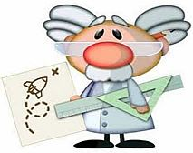
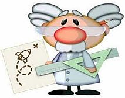
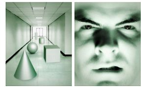
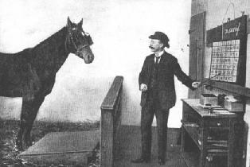
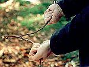
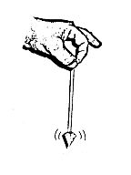
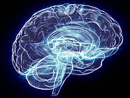

Existe una pila de investigación que sería degradada una vez es confrontada con el método científico. No pasaría. De hecho, yo misma, como periodista de la ciencia, he escrito sobre estudios que al final no son confirmados y han tenido que pasar a ser remodelados por equipos o sencillamente erradicados. He ido aprendiendo poco a poco a distinguir cuáles tienen más evidencias detrás y confirmaciones por delante. Ciertamente, la ciencia no es perfecta. Los errores, deseos y mafias existen porque los científicos son humanos que viven en un contexto específico; por ello, precisamente, se elaboró este método, porque no sólo existe el placebo, sino que errores y malas interpretaciones de los investigadores suelen aparecer también. No somos racionales vulcanos.
Irónicamente, parte de la ciencia ha sido edificada a través de errores, es así como los humanos somos y pensamos, de esa forma nos hemos desarrollado. Las equivocaciones nos ayudan a comprender y distinguir lo que no es, lo que todavía no ha conseguido evidencias de que funciona, lo que no existe y lo que tiene más facilidades de avanzar. Así se va creando lo que sabemos; muchas veces buscando una cosa en específico se encuentra otra más importante, otras veces sólo se descubre frustración ante erradas soluciones y en ocasiones alguien se convierte en el protagonista del momento hasta que sus hallazgos son reestructurados. Esto último ocurrió con muchas de las propuestas de Sigmund Freud y la ‘mente del subconsciente’ fue una de ellas.
Ya hemos hablado aquí de Freud, un estupendo pensador y observador; de hecho, sus nociones continúan avanzando a la ciencia que sobre muchos de sus conceptos se han estudiado otros que una vez reformados explican comportamientos desde la neurología. Precisamente, el inconciente del señor Freud es uno de ellos.

Para el psicoanalista por excelencia, la mente inconsciente tenía la delicada función de almacenar memorias reprimidas que una vez liberadas producían episodios psicóticos. Tristemente, luego de décadas de investigaciones científicas, no existe evidencia alguna de que existan memorias reprimidas y de que su liberación sea la causa de comportamientos caóticos. Tampoco se ha descubierto ninguna relación con la mente subconsciente de Freud y la noción que de ella tenían Carl Jung and Charles Tart. Para ellos, el inconciente suponía un lugar repleto de verdades trascendentales; pero tampoco existe evidencia alguna de que sea así.
El inconsciente que conocemos anda regado por todo el cerebro; son las cosas que el cerebro registra sin avisarnos, las que hace sin que las registremos. Este órgano está encargado de la comunicación con el cuerpo en todos los sentidos, el movimiento que origina una picada de mosquito, desde la sensación de que come hasta la mano que rasca, salen de allí, de hecho, guardamos prejuicios y manías allí, intolerancias que la experiencia y la razón han erradicado de la consciencia porque saben que no están bien.
Existen casos reales que nos demuestran estos procedimientos cerebrales, la afasia de jerga, la negación ciega de la realidad, la ceguera cortical, la disociación verbal y oral y sentir sin ver son algunas de las más estudiadas. El neurólogo Vilayanur S. Ramachandran nos cuenta de un paciente que sufría de ceguera cortical, que ocurre cuando la persona ha perdido su visión normal pero hay una parte que no está dañada y le permite ver ‘bultos’ en el medio; así, el paciente es capaz de evitar obstáculos en su camino sin reconocer siquiera que lo está haciendo. Ramachandran nos habla, en distintas ocasiones, sobre los módulos cerebrales que aparentemente capacitan con conciencia los lugares donde residen. En pacientes con derrames, por ejemplo, se perjudican áreas específicas que muchas veces dejan otros espacios trabajando bien pero sin consciencia de lo que ocurre, silenciadas, dañadas. La persona podrá hacer algo, por ejemplo, sonreír perfectamente cuando su hermana llega, a pesar de que sufre de la sonrisa de lado de los pacientes paralizados de un hemisferio, porque el lugar que procesa este tipo de sonrisa emocional no tiene idea que el área que controla esa función está paralizada; o puede que el paciente no se dé cuenta de un error, por ejemplo, el brazo izquierdo del señor no funciona pero él se empeña en que sí y en los experimentos realiza las acciones como si así lo fuera.
“Hay personas que no reconocen partes de ellas mismas, inventan historias inimaginables para confirmarlo. Una paciente estaba empeñada en que el brazo no era suyo, decía que era de su hermano, otro se cayó de la cama luchando contra su propio brazo porque no lo reconocía. Una mujer se maquillaba sólo la parte derecha de su cara porque la izquierda no existía para ella”, explica Ramachandran.
Ciertamente, el inconsciente es parte del procesamiento del cerebro. Estar y ser conscientes ocurre en varios lugares y también en la conexión correcta de todo el cerebro. Al parecer, hay partes que tienen su propia conciencia y, cuando se dañan, algunas conductas continúan ocurriendo pero la persona no se da cuenta de ello. Pero también ocurre eso de ‘ser conciente’, de tener identidad, que es más bien la conexión global de todo el órgano y del centro de memorias trabajando correctamente.
Pero el inconsciente va mucho más allá, por supuesto. El cerebro es un órgano tan ocupado y con tantos factores que manejar, que mucho de lo que allí ocurre sucede sin nuestro conocimiento. Un sinnúmero de rasgos pasa sin dejar rastro en nosotros, como el movimiento automático de mis pies mientras escribo o mi respiración.
Pero conozcamos primero un poco a un caballo alemán llamado Hans. En 1891, este caballo se volvió muy famoso por su inteligencia, todo el mundo pensaba que el cuadrúpedo era capaz de resolver complejos problemas y siempre daba la respuesta correcta con el número de golpes de su pata. Grupos fueron a investigar al listo Hans (Kluge Hans en alemán) y a su dueño Wilhelm von Osten, pero no encontraron pista alguna de que el dueño le pasase señales al caballo. Eso fue hasta que Oskar Pfungst, biólogo y psicólogo de la época, los estudiara.
Pfungst descubrió un fenómeno bastante particular, el caballo no estaba siendo entrenado por el señor, simplemente tomaba sus pistas de las cosas que hacía el dueño, sin saberlo, o de las mismas personas que asistían a verlo. Si el animal era puesto en un lugar donde no tenía acceso al dueño y a su audiencia, no respondía de forma correcta, lo mismo ocurría si la persona que hacía la pregunta y los asistentes no conocían la respuesta. De hecho, la audiencia y el señor von Osten producían señales sutiles, como doblar el torso hacia delante, cada vez que el caballo tenía la cantidad indicada, el animal lo notaba y dejaba de tocar con la pata justo en el número correcto. El inteligente Hans se llevaba del señalamiento inconsciente que usamos de forma involuntaria. Ni el dueño del caballo ni los asistentes se daban cuenta de que la inteligencia del jamelgo no era conocer las respuestas sino descubrir la forma en que debía actuar para llenar las expectativas de los demás.
La yegua de J.B. Rhine, Lady Wonder, también fue declarada psíquica por su dueño; el alegaba que el animal tenía poderes telepáticos.
“Cuando los mandos no funcionaban, él declaraba que la telepatía había abandonado al animal, el razonamiento de este señor es lo que llamamos falso dilema”, explica el famoso mago James Randi.

Detrás de estos fenómenos se esconden procedimientos cerebrales que son guiados por las expectativas del animal, sobretodo del Homo sapiens. Los juegos de la Ouija, la regresión a vidas pasadas, el fenómeno de ‘lenguas desconocidas’ y ocurrencias extrañas como la acontecida con la enfermera y el paciente en coma donde ella era la que realizaba la acción y decía que era él quien movía el cursor y hablaba desde su coma. Investigadores detectaron el defecto a través de la experimentación, como con el listo Hans. Así descubrieron que la enfermera Linda era la única que hablaba y a lo mejor ni ella misma se daba cuenta.
Hay muchas cosas que ocurren sin que las sintamos; la percepción es un evento fragmentado y repleto de pormenores a los que no le hacemos caso todo el tiempo, sabemos que están ahí pero necesitan cambiar radicalmente para que le prestemos atención. De hecho, para la neurología actual, parte de la mente inconsciente es más bien ese cerebro inatento que lo hace, no con el fin de no recordar memorias reprimidas o almacenarlas sin saberlo, sino con la meta de que la persona pueda navegar sin problemas en la sociedad.
“Una vez manejaba hacia una provincia con un amigo cuando simultáneamente pensamos en un compañero que tuvimos juntos en la universidad. Cuando nos dimos cuenta comenzamos a recordar lo que habíamos visto en el camino antes de pensar en él simultáneamente y descubrimos que pasamos una tienda con el dibujo de un reloj pendular; nuestro amigo se distinguía por usar uno así. Sin embargo, ninguno de los dos nos dimos cuenta del reloj, ni pensamos en este objeto hasta que nos llevara a nuestro amigo en común y de vuelta al objeto”, relata el psicólogo Jim Alcock.
No es telepatía y no somos psíquicos; nos ha parecido así por el desconocimiento existente sobre el cerebro y ese deseo inagotable que tenemos de creer en algo, en lo que sea. Pero cada uno de esos fenómenos tiene un nombre y rasgos bastante terrestres que tienen su origen en la compleja maraña que es nuestra intricada red neuronal. Todo lo que te ocurre es originado por la interacción entre biología y experiencia; ningún poder paranormal o ente sobrenatural ha ofrecido evidencia alguna de actuar a favor de nadie, ni prueba seria y erudita de su existencia. Estos poderes paranormales e inventados superhéroes no han aprobado, ni aprueban, el riguroso método científico.
Buscando agua con un palo
La noción ideomotora
Los zahoríes dicen detectar la existencia de flujos magnéticos, corrientes de agua, vetas de minerales y lagos subterráneos, siguiendo un palo. Estas personas toman entre sus manos una vara que los guía y los lleva al lugar a través de señales psíquicas que ellos, y sólo ellos, pueden detectar. No obstante, este grupo de paranormales no ha conseguido demostrar sus poderes, de hecho, desde 1852 se conoce la explicación para los movimientos que usan los zahoríes y brujos varios en sus dependencias para asustar a los clientes, gracias a William B. Carpenter quien empleó el término acción ideomotora.
“Movimientos musculares pueden ser iniciados por el cerebro independientemente de voliciones o emociones. A lo mejor no estamos conscientes de ello pero podemos hacer sugerencias y observaciones, o ser víctimas de las mismas, que influyen en la conducta motora”, explicó el científico.
Ray Hyman demostró en 1999 que la influencia del efecto ideomotor está detrás de fraudes médicos como el diagnóstico o examen de pulso que utiliza Deepak Chopra en su medicina ayuvérdica. También se encuentra en todas esas tecnologías que dicen recoger ‘energía’ para luego usarla.
“Estas investigaciones comprueban, además, que gente honesta e inteligente puede inconscientemente causar actividad muscular que es consistente con las expectativas. También han demostrado que la sugestión que guía este comportamiento es proporcionada a través de pistas sutiles”, explica Hyman. “Expusimos a quiroprácticos en Wisonsin y comprobamos que estaban utilizando máquinas para colectar energía que no funcionaban, que no hacían la labor que vendían. Tampoco los péndulos; de hecho, el primero en demostrar que el movimiento de los ‘péndulos exploradores’ era guiado por esta noción ideomotora fue el químico francés Michel Chevreul”.
Por supuesto, que no nos demos cuenta de lo que ocurre no quiere decir que el hecho no haya ocurrido o que en alguna parte de nuestro cerebro aún lo alojemos. Es probable que lo olvidemos pronto ya que las memorias son mantenidas por la práctica, se van anclando en circuitos por todo el cerebro y luego son despertadas por nuestras necesidades y percepciones. De la misma forma, nuestra conciencia e inconciencia habita en toda la red y es parte de recordar, sentir, sobrevivir.
“Puede ser el salto de horror al ver una película de miedo en el cine o el pulso que se agita al encontrarnos con un perro que gruñe, la gente reacciona al miedo de acuerdo a su nivel básico de ansiedad en el inconsciente. Nosotros descubrimos la región donde el cerebro filtra todas esas amenazas a través del nivel de ansiedad de la persona”, explica Eric Kandel de la Universidad de Columbia.
El inconsciente como la consciencia, está en todos lados del cerebro. Los distinguimos de acuerdo a nuestra posición, si el sujeto está conciente de ello o no; pero para el cerebro es lo mismo, es trabajo, actividad, sólo tiene distintos significados para el ser que aloja el órgano. El cerebro siempre aplicará estos mecanismos de acuerdo a su estructura y dirección biológicas, a las circunstancias y a la visión que aprendió de la vida. Este órgano, lo queramos o no, está en todo.
Ray Hyman: http://www.quackwatch.org/01QuackeryRelatedTopics/ideomotor.html
Un poco más sobre el fenómeno de ‘sentir sin ver’ en este PDF, en inglés. https://docs.google.com/viewer?url=http://web.archive.org/web/20070715092921/http:/www.apa.org/ppo/rensink.pdf&pli=1
Volver al índice de la Lupa Herética
© 2008-2026 Glenys Álvarez y Sin Dioses. Prohibida la reproducción con fines comerciales.
Comentarios
Comments powered by Disqus